تمرین
تمرین
۱- در هر یک از شکل های زیر، به طور تقریبی چه کسری از لیوان پر شده است؟
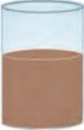
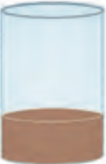
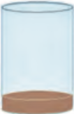
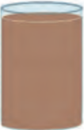
۲-کسری که هر دایره نشان میدهد را بنویسید و به همان اندازه از مستطیل را رنگ کنید.
| 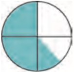 | 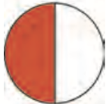 | ||||
| 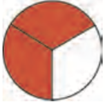 | |||||
| 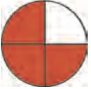 |
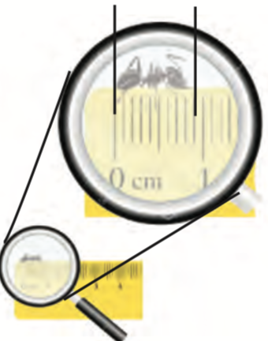
۳- طول مورچه ای را با خط کش اندازه گرفته ایم.
برای اینکه مورچه بهتر دیده شود، آن را زیر ذرهبین گذاشته ایم.
طول مورچه میلی متر است.
طول مورچه قسمت از ۱۰ قسمت مساوی است.
طول مورچه چه کسری از یک سانتی متر است؟
برای اینکه مورچه بهتر دیده شود، آن را زیر ذرهبین گذاشته ایم.
طول مورچه میلی متر است.
طول مورچه قسمت از ۱۰ قسمت مساوی است.
طول مورچه چه کسری از یک سانتی متر است؟
۴- هر شکل به طور تقریبی چه کسری را نشان میدهد؟
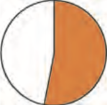
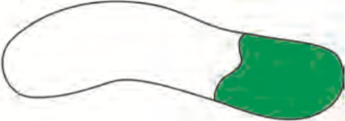
۵-یک نوار کاغذی درست کنید. آنرا با تا کردن به ۲، ۳، ۴ قسمت مساوی تقسیم کنید. روش کار خود را توضیح دهید.
۴۸